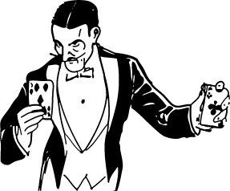

You are here: Home ‣ Dive Into HTML5 ‣
❧
he browser location bar is perhaps the geekiest mainstream piece of user interface in the world. There are URLs on billboards, on the sides of trains, and even in street graffiti. Combined with the back button — easily the most important button in the browser — you have a powerful way to go forward and backward through the vast set of intertwingled resources called the Web.
The HTML5 history API is a standardized way to manipulate the browser history via script. Part of this API — navigating the history — has been available in previous versions of HTML. The new parts in HTML5 include a way to add entries to the browser history, to visibly change the URL in the browser location bar (without triggering a page refresh), and an event that fires when those entries are removed from the stack by the user pressing the browser’s back button. This means that the URL in the browser location bar can continue to do its job as a unique identifier for the current resource, even in script-heavy applications that don’t ever perform a full page refresh.
❧
Роман, [09.09.18 19:25]
Why would you manually manipulate the browser location? After all, a simple link can navigate to a new URL; that’s the way the web has worked for 20 years. And it will continue to work that way. This API doesn’t try to subvert the web. Just the opposite. In recent years, web developers have found new and exciting ways of subverting the web without any help from emerging standards. The HTML5 history API is actually designed to ensure that URLs continue to be useful in script-heavy web applications.
Going back to first principles, what does a URL do? It identifies a unique resource. You can link to it directly; you can bookmark it; search engines can index it; you can copy and paste it and email it to someone else, who can click it and end up seeing the same resource you saw originally. These are all excellent qualities. URLs matter.
So we want unique resources to have unique URLs. But at the same time, browsers have always had a fundamental limitation: if you change the URL, even through script, it triggers a roundtrip to the remote web server and a full page refresh. This takes time and resources, and it seems especially wasteful when you are navigating to a page that is substantially similar to the current page. Everything on the new page gets downloaded, even the parts that are exactly the same as the current page. There is no way tell a browser to change the URL but only download half a page.
The HTML5 history API lets you do this. Instead of triggering a full page refresh, you can use script to, in essence, download half a page. This illusion is tricky to pull off, and it requires some work on your part. Are you watching closely?

Let’s say you have two pages, page A and page B. The two pages are 90% identical; only 10% of the page content is different. The user navigates to page A, then tries to navigate to page B. But instead of triggering a full page refresh, you interrupt this navigation and do the following steps manually:
XMLHttpRequest). This will require some server-side changes to your web application. You will need to write code to return just the 10% of page B that is different from page A. This can be a hidden URL or query parameter that the end user would not normally see.
innerHTML or other DOM methods). You may also need to reset any event handlers on elements within the swapped-in content.
At the end of this illusion (if you executed it correctly), the browser ends up with a DOM that is identical to page B, just as if you had navigated to page B directly. The browser location bar ends up with a URL that is identical to page B, just as if you had navigated to page B directly. But you never really did navigate to page B, and you never did a full page refresh. That’s the illusion. But because the “compiled” page looks the same as page B and has the same URL as page B, the user should never notice the difference (nor appreciate all your hard work micromanaging their experience).
❧
The HTML5 history API is just a handful of methods on the window.history object, plus one event on the window object. You can use these to detect support for the history API. Support is currently limited to the very latest versions of a few browsers, putting these techniques squarely in the “progressive enhancement” camp.
Роман, [09.09.18 19:25]
| IE | Firefox | Safari | Chrome | Opera | iPhone | Android |
|---|---|---|---|---|---|---|
| · | 4.0+ | 5.0+ | 8.0+ | 11.50+ | 4.2.1+ | · |
dive into dogs is a straightforward but non-trivial example of using the HTML5 history API. It demonstrates a common pattern: a long article with an associated inline photo gallery. In a supported browser, navigating the Next and Previous links in the photo gallery will update the photo in place and update the URL in the browser location bar, without triggering a full page refresh. In unsupported browsers — or, indeed, supported browsers where the user has disabled scripting — the links simply function as regular links, taking you to a new page with a full page refresh.
This brings up an important point:
If your web application fails in browsers with scripting disabled, Jakob Nielsen’s dog will come to your house and shit on your carpet.
Let’s dig into the dive into dogs demo and see how it works. This is the relevant markup for a single photo:
<aside id="gallery">
<p class="photonav">
<a id="photonext" href="casey.html">Next ></a>
<a id="photoprev" href="adagio.html">< Previous</a>
</p>
<figure id="photo">
<img id="photoimg" src="gallery/1972-fer-500.jpg"
alt="Fer" width="500" height="375">
<figcaption>Fer, 1972</figcaption>
</figure>
</aside>
Nothing unusual there. The photo itself is an <img> inside a <figure>, the links are just regular <a> elements, and the entire thing is wrapped in an <aside>. It’s important that these are just regular links that actually work. All the code that follows is behind a detection script. If the user is using an unsupported browser, none of our fancy history API code will ever be executed. And of course, there’s always some users with scripting disabled altogether.
The main driver function gets each of these links and passes it to a function, addClicker(), which does the actual work of setting up the custom click handler.
function setupHistoryClicks() {
addClicker(document.getElementById("photonext"));
addClicker(document.getElementById("photoprev"));
}
This is the addClicker() function. It takes an <a> element and adds a click handler. And within this click handler is where it gets interesting.
function addClicker(link) {
link.addEventListener("click", function(e) {
swapPhoto(link.href);
history.pushState(null, null, link.href);
e.preventDefault();
}, false);
}
The swapPhoto() function performs the first two steps of our three-step illusion. The first half of the swapPhoto() function takes part of the URL of the navigation link itself — casey.html, adagio.html, &c. — and constructs a URL to a hidden page that contains nothing but the markup required by the next photo.
Роман, [09.09.18 19:25]
function swapPhoto(href) {
var req = new XMLHttpRequest();
req.open("GET",
http://diveintohtml5.org/examples/history/gallery/" +
href.split("/").pop(),
false);
req.send(null);
Here is a sample of the markup returned by http://diveintohtml5.org/examples/history/gallery/casey.html. (You can verify this in your browser by visiting that URL directly.)
<p class="photonav">
<a id="photonext" href="brandy.html">Next ></a>
<a id="photoprev" href="fer.html">< Previous</a>
</p>
<figure id="photo">
<img id="photoimg" src="gallery/1984-casey-500.jpg"
alt="Casey" width="500" height="375">
<figcaption>Casey, 1984</figcaption>
</figure>
Does that look familiar? It should. It’s the same basic markup that the original page used to display the first photo.
The second half of the swapPhoto() function performs the second step of our three-step illusion: inserting this newly downloaded markup into the current page. Remember that there is an <aside> wrapping the entire figure, photo, and caption. So inserting the new photo markup is a one-liner, setting the innerHTML property of the <aside> to the responseText property returned from XMLHttpRequest.
if (req.status == 200) {
document.getElementById("gallery").innerHTML = req.responseText;
setupHistoryClicks();
return true;
}
return false;
}
(Also notice the call to setupHistoryClicks(). This is necessary to reset the custom click event handlers on the newly inserted navigation links. Setting innerHTML wipes out any trace of the old links and their event handlers.)
Now, let’s go back to the addClicker() function. After successfully swapping out the photo, there’s one more step in our three-step illusion: setting the URL in the browser location bar without refreshing the page.
history.pushState(null, null, link.href);The history.pushState() function takes three parameters:
state can be any JSON data structure. It is passed back to the popstate event hander, which you’ll learn about in just a moment. We don’t need to track any state in this demo, so I’ve left it as null.
title can be any string. This parameter is currently unused by major browsers. If you want to set the page title, you should store it in the state argument and set it manually in your popstate callback.
url can be, well, any URL. This is the URL you want to appear in the browser’s location bar.
Calling history.pushState will immediately change the URL in the browser’s location bar. So is that the end of the illusion? Well, not quite. We still need to talk about what happens when the user presses the all-important back button.
Normally when the user navigates to a new page (with a full page refresh), the browser pushes the new URL onto its history stack and downloads and draws the new page. When the user presses the back button, the browser pops one page off its history stack and redraws the previous page. But what happens now that you’ve short-circuited this navigation to avoid a full page refresh? Well, you’ve faked “moving forward” to a new URL, so now you also need to fake “moving backward” to the previous URL. And the key to faking “moving backwards” is the popstate event.
window.addEventListener("popstate", function(e) {
swapPhoto(location.pathname);
}
After you’ve used the history.pushState() function to push a fake URL onto the browser’s history stack, when the user presses the back button, the browser will fire a popstate event on the window object. This is your chance to complete the illusion once and for all. Because making something disappear isn't enough; you have to bring it back.
In this demonstration, “bringing it back” is as simple as swapping in the original photo, which we do by calling the swapPhoto() with the current location. By the time your popstate callback is called, the URL visible in the browser’s location bar has been changed to the previous URL. Also, the global location property has already been updated with the previous URL.
To help you visualize this, let’s step through the entire illusion from the beginning to the end:
http://diveintohtml5.org/examples/history/fer.html, sees story and a photo of Fer.
<a> element whose href property is http://diveintohtml5.org/examples/history/casey.html.
http://diveintohtml5.org/examples/history/casey.html with a full page refresh, the custom click handler on the <a> element traps the click and executes its own code.
click handler calls the swapPhoto() function, which creates an XMLHttpRequest object to synchronously download the HTML snippet located at http://diveintohtml5.org/examples/history/gallery/casey.html.
swapPhoto() function sets the innerHTML property of the photo gallery wrapper (an <aside> element), thereby replacing the captioned photo of Fer with a captioned photo of Casey.
click handler calls the history.pushState() function to manually change the URL in the browser’s location bar to http://diveintohtml5.org/examples/history/casey.html.
history.pushState() function). Instead of navigating to the previous URL and redrawing the entire page, the browser simply updates the location bar to the previous URL (http://diveintohtml5.org/examples/history/fer.html) and fires a popstate event.
popstate handler calls the swapPhoto() function again, this time with the previous URL that by now is already visible in the browser’s location bar.
XMLHttpRequest, the swapPhoto() function downloads a snippet of HTML located at http://diveintohtml5.org/examples/history/gallery/fer.html and sets the innerHTML property of the <aside> wrapper element, thereby replacing the captioned photo of Casey with a captioned photo of Fer.
The illusion is complete. All visible evidence (the content of the page, and the URL in the location bar) suggests to the user that they have navigated forward one page and backward one page. But no full page refresh ever occurred — it was all a meticulously executed illusion.
❧
❧
This has been “Manipulating History for Fun & Profit.” The full table of contents has more if you’d like to keep reading.
In association with Google Press, O’Reilly is distributing this book in a variety of formats, including paper, ePub, Mobi, and DRM-free PDF. The paid edition is called “HTML5: Up & Running,” and it is available now. This chapter is not yet included in the paid edition, so consider it a bonus.
If you liked this chapter and want to show your appreciation, you can buy “HTML5: Up & Running” with this affiliate link or buy an electronic edition directly from O’Reilly. You’ll get a book, and I’ll get a buck. I do not currently accept direct donations.
Copyright MMIX–MMXI Mark Pilgrim